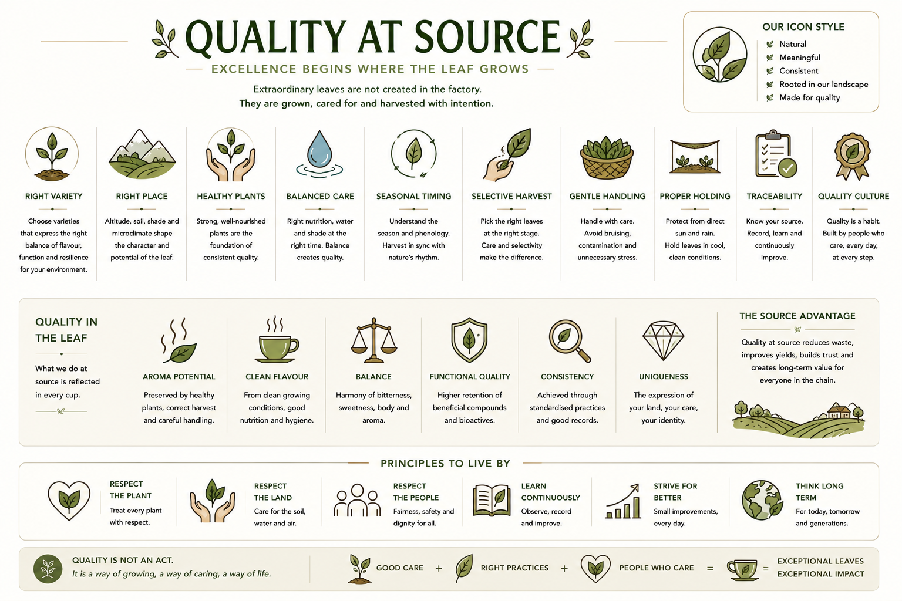

Quality is established in the field, not in the processing shed. Ten principles that govern what a Buna leaf brings to processing.

Tap image to view full board.
At Thumpassery Estate, selective harvest of Chandragiri Arabica under rubber shade is the primary quality control point. The leaf arrives at processing already shaped by its origin. What happens at harvest determines what processing can do.
Picking only leaves at the correct maturity for the intended preparation. The most impactful quality decision made in the field. Selective harvest cannot be recovered downstream.
See Leaf Stages →ResearchKnowing exactly where a leaf came from — which block, which plant age, which season, which handling chain. Traceability is the foundation of learning and of consistent product development.
See Record Keeping →ObservedTime and temperature between picking and first processing step are active quality variables. Enzymatic change begins the moment a leaf is cut. Fast, cool, clean handling preserves options.
See Processing →ResearchConsistency within a batch — same maturity, same handling, same timing — produces predictable processing results and consistent cup character. Mixed batches produce mixed results.
None →Freedom from contamination — chemical residues, field dust, off-odour material. Purity in the leaf becomes purity in the cup.
See Pest Management →ObservedThe inherent aromatic capacity of the leaf at harvest, determined by origin, variety, and maturity. Cannot be created in processing — only unlocked or lost.
See Leaf Origin →ResearchThe balance of polyphenols, chlorogenic acids, caffeine, GABA, and volatile precursors in the harvested leaf. Established at source. Influenced by altitude, variety, season, and leaf age.
None →Physical wholeness of the leaf — intact cell walls, no bruising, no compression damage. Integrity determines how controllably the leaf will respond to processing.
None →The time-sensitive quality that declines from the moment of harvest. Fresh leaves have maximum flavour potential, enzyme activity, and structural integrity.
None →The set of habits, disciplines, and values that produce consistent leaf quality at source. Systems without culture degrade. Culture without systems does not scale.
None →No process can create quality that is not already present in the leaf. The best equipment and the best technique cannot recover a leaf that arrived in poor condition. Great Citane begins at the moment of harvest.